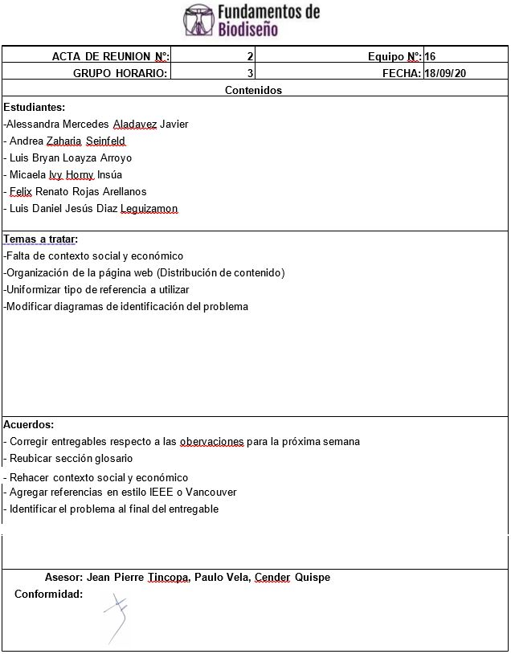

Contexto Social
Cada día mueren alrededor de 830 mujeres por complicaciones relacionadas con el embarazo o parto en todo el mundo. La mayoría de estas muertes se producen en países de bajos ingresos y podrían haberse evitado. La tasa de mortalidad materna a nivel mundial disminuyó de 385 muertes por cada 100 000 nacidos vivos en el año 1990, a 216 fallecimientos en 2015, lo cual corresponde a una reducción de 43.9, sin embargo, la suma total de fallecimientos alcanzó un valor de 10.7 millones. [1]
Figura 1: Tasa estimada de mortalidad materna a nivel mundial entre los años 1990 y 2015.
Al ver que es posible acelerar la reducción, una de las metas del Objetivo de Desarrollo Sostenible 3 consiste en reducir la RMM mundial a menos de 70 por 100 000 nacidos vivos y lograr que ningún país tenga una mortalidad materna que supere el doble de la media mundial. [1]
Figura 2: Proyección para el año 2030. Escenario 1 considera una reducción anual de 2.9%, mientras que el escenario 2 se basa en el Objetivo de Desarrollo Sostenible de menos de 70 muertes maternas por cada 100 000 nacidos vivos (a nivel mundial) y una cantidad menor de 140 fallecimientos por país.
El alto número de muertes maternas en algunas zonas del mundo refleja las inequidades en el acceso a los servicios de salud. El 99% corresponde a los países en desarrollo: más de la mitad al África subsahariana y casi un tercio a Asia Meridional, es decir en entornos frágiles y contextos de crisis humanitaria. [2]
Figura 3: Tasa de mortalidad materna a nivel mundial (por cada 100 000 nacidos vivos) en 2017
En la figura 3, se observa que las zonas menos afectadas corresponden a Norteamérica, Europa, el Golfo Pérsico, Japón, Corea del Sur, Australia y Nueva Zelanda, mientras que el continente africano presenta la mayor tasa de mortalidad a nivel mundial, lo cual evidencia una relación directa entre el nivel de desarrollo socio-económico con la tasa de mortalidad materna.
Tabla 1: Tasa de mortalidad materna por cada 100 000 nacidos vivos por regiones del Banco Mundial en el periodo 2000 - 2017
En la tabla 1 se observa que, pese a la tendencia en común a la baja en todas las regiones del mundo, la zona con la mayor tasa de mortalidad es el África subsahariana, mientras que Europa, Asia Central y Norteamérica presentan la menor tasa global. Así mismo, se registró un descenso del 35.38% a nivel mundial.
El riesgo de muerte relacionada con la maternidad a lo largo de la vida es de 1/4900 en los países desarrollados y de 1/180 en los países en desarrollo. En los países clasificados como estados frágiles el riesgo es de 1/54, lo cual demuestra las consecuencias de la descomposición de los sistemas de salud. Hay grandes disparidades entre los países pero también en un mismo país, entre mujeres con ingresos altos y bajos y entre la población rural y urbana. [3] [4]
A nivel sudamericano:
Tabla 2: Tasa de mortalidad materna por cada 100 000 nacidos vivos en países de Sudamérica en el periodo 2000 - 2017
En la tabla 2, se observa que los países con la menor tasa de mortalidad materna son Chile y Uruguay, mientras que los que presentan la mayor tasa son Bolivia y Venezuela. Además, la tendencia en todos los países es a la baja, a excepción de Venezuela que registró un incremento de un 5,04% entre los años 2000 y 2017.
Comparación Perú VS Sudamérica VS Mundo:
Tabla 3: Comparación de la tasa de mortalidad del Perú, la región Sudamericana y el mundo durante el periodo 2000 - 2017
En el gráfico se observa que el Perú se mantiene muy por debajo de la media global durante el periodo 2000-2017; sin embargo, todavía supera la tasa de mortalidad sudamericana.
Mapa de Riesgo de Muerte Materna notificada por departamento 2017
La mayor parte de los departamentos que se encuentran en la vertiente oriental tienen la razón de mortalidad más alta.
Fuente: Centro Nacional de Epidemiología, Prevención y Control de Enfermedades CDC -MINSA.
Las soluciones sanitarias para prevenir o tratar complicaciones incluyen que todas las mujeres necesitan acceso a la atención prenatal durante la gestación, a la atención especializada durante el parto y el apoyo en las primeras semanas tras el parto. Como parte de la Estrategia mundial para acabar con la mortalidad materna prevenible, la OMS está colaborando con asociados para:
Contexto Económico
La muerte materna es un suceso trágico que ha estado presente desde los inicios de la humanidad y actualmente representa uno de los mayores desafíos para numerosos países en vías de desarrollo. Adicionalmente, cabe notar que la mortalidad materna es utilizada como indicador de progreso, desarrollo económico y de calidad de servicios de salud para evidenciar las brechas existentes entre cada país. [6]
Los países que presentan tasas más altas de mortalidad materna, al mismo tiempo, invierten más recursos en salud sexual y reproductiva. [7]
La Organización Mundial de la Salud establece que 830 madres fallecen cada día debido a complicaciones, [8] lo que puede conllevar a consecuencias catastróficas para una familia de bajos o medios recursos. En otras palabras, aparte de significar una dura pérdida emocional, la muerte materna presenta un impedimento para el desarrollo económico familiar lo cual incrementa el riesgo de ciclos de pobreza recurrentes y representa la pérdida de oportunidades económicas. [6] Asimismo, la maternidad temprana altera la trayectoria económica de la persona, lo que también lleva a incrementar los ciclos de pobreza en un país. Dicho hecho está representado en línea discontinua del siguiente gráfico. [9]
Un estudio en El Salvador, propone la siguiente tabla del promedio de gastos semanales en 7900 niñas y adolescentes embarazadas. [9]
Existen numerosos factores socioeconómicos que amplifican la posibilidad de resultados fatales como la muerte materna. Algunos ejemplos son viviendas aisladas, bajos recursos económicos, falta de apoyo a la gestante y embarazo juvenil. La inversión en salud sexual y reproductiva en países de ingresos bajos y medianos (PIBM) ahorrarían fondos que alternativamente pueden ser utilizados en mejorar los servicios de atención materna y del recién nacido al reducir la población gestante no planificada. [7]
La maternidad temprana es además otro factor que afecta indirectamente la economía familiar debido a que las madres adolescentes no logran culminar sus estudios escolares o superiores. Por ende, esta situación resulta en desempleo y pocas posibilidades de crecimiento económico personal de manera que la adherencia a los controles prenatales se dificultan por razones monetarias. [9]
De acuerdo al Grupo Inter-Agencial MMEIG, la mortalidad materna en sudamérica fue de 74 por cada 100,000 nacimientos con vida en el 2017, suceso que representa un avance a comparación de los 88 por cada 100,000 nacimientos con vida en 2005 [10]. Sin embargo, los Objetivos de Desarrollo Sostenible propuestos por la Organización Mundial de la Salud apuntan a alcanzar tasas de mortalidad materna menores a 70 por cada 100,000 nacimientos con vida para el 2030. [11]
En el 2017, la tasa de mortalidad materna en el Perú fue de 88 por cada 100,000 nacimientos con vida [10] lo cual resalta las grandes disparidades socioeconómicas que están presentes en la nación y abre las puertas a oportunidades de mejoría. Una solución evidente, aunque desafiante, para reducir la tasa de mortalidad materna en Perú es la promulgar y facilitar la obtención de servicios de control prenatal a las madres gestantes. Según la Encuesta Demográfica de Salud Familiar (ENDES) del 2017 en el Perú, 1,3% de madres gestantes no asistieron a controles prenatales mientras que 97.5% si recibieron servicios satisfactorios; no obstante, cerca de un 20% de madres asistieron a una menor cantidad de controles que lo recomendado. [8] Un estudio adicional indicó que dentro de un grupo de 662 madres gestantes peruanas, la dificultad de conseguir permiso del trabajo, el difícil acceso a centros de cuidados prenatales y la obtención de servicios incompletos interfirieron con su adherencia a los controles. [12]
Referencias
[1] L. Alkema et al., “Global, regional, and national levels and trends in maternal mortality between 1990 and 2015, with scenario-based projections to 2030: A systematic analysis by the un Maternal Mortality Estimation Inter-Agency Group,” Lancet, 2016, doi: 10.1016/S0140-6736(15)00838-7.
[2] WHO, “Trends in maternal mortality 2000 to 2017: estimates by WHO, UNICEF, UNFPA, World Bank Group and the United Nations Population Division.,” 2019.
[3] A. Conde-Agudelo, J. M. Belizán, and C. Lammers, “Maternal-perinatal morbidity and mortality associated with adolescent pregnancy in Latin America: Cross-sectional study,” Am. J. Obstet. Gynecol., 2005, doi: 10.1016/j.ajog.2004.10.593.
[4] G. C. Patton et al., “Global patterns of mortality in young people: a systematic analysis of population health data,” Lancet, 2009, doi: 10.1016/S0140-6736(09)60741-8.
[5] United Nations and SDG’s, “The global strategy for women’s, children’s and adolescents health (2016-2030),” United Nations, 2016, doi: 10.1017/CBO9781107415324.004.
[6] S. Miller and J. M. Belizán, “The true cost of maternal death: Individual tragedy impacts family, community and nations,” Reproductive Health. 2015, doi: 10.1186/s12978-015-0046-3.
[7] N. Lince-Deroche, E. A. Sully, L. Firestein, and T. Riley, “Budgeting for comprehensive sexual and reproductive health and rights under universal health coverage,” Sex. Reprod. Heal. Matters, 2020, doi: 10.1080/26410397.2020.1779631.
[8] H. Martínez and R. Rubio, Control prenatal inadecuado asociado a complicaciones perinatales en el Hospital Nacional Sergio E. Bernales en el periodo enero-junio del 2019. Lima: Universidad Ricardo Palma, 2020.
[9] H. González, M. Iraheta, W. Sotomayor, F. Tobar y W. Mejía, El costo económico del embarazo en niñas y adolescentes, 1st ed. El Salvador: Fondo de Población de las Naciones Unidas (UNFPA), 2017.
[10] "Mortalidad materna", Observatorio de Igualdad de Género de América Latina y el Caribe. [Online]. Available: https://oig.cepal.org/es/indicadores/mortalidad-materna. [Accessed: 20- Sep- 2020].
[11] "Según un informe de las Naciones Unidas, las cifras de supervivencia materno infantil son más elevadas que nunca", Organización Mundial de la Salud, 2019. [Online]. Available: https://www.who.int/es/news-room/detail/19-09-2019-more-women-and-children-survive-today-than-ever-before-un-report. [Accessed: 20- Sep- 2020].
[12] L. Rivera, N. Burgos, J. Gomez y V. Moquillaza, Factores asociados al acceso a la atención prenatal en los hospitales de Huaral y Chancay, Perú. Lima, 2018, p. https://revistasinvestigacion.unmsm.edu.pe/index.php/anales/article/view/14939.
Acta número 2
